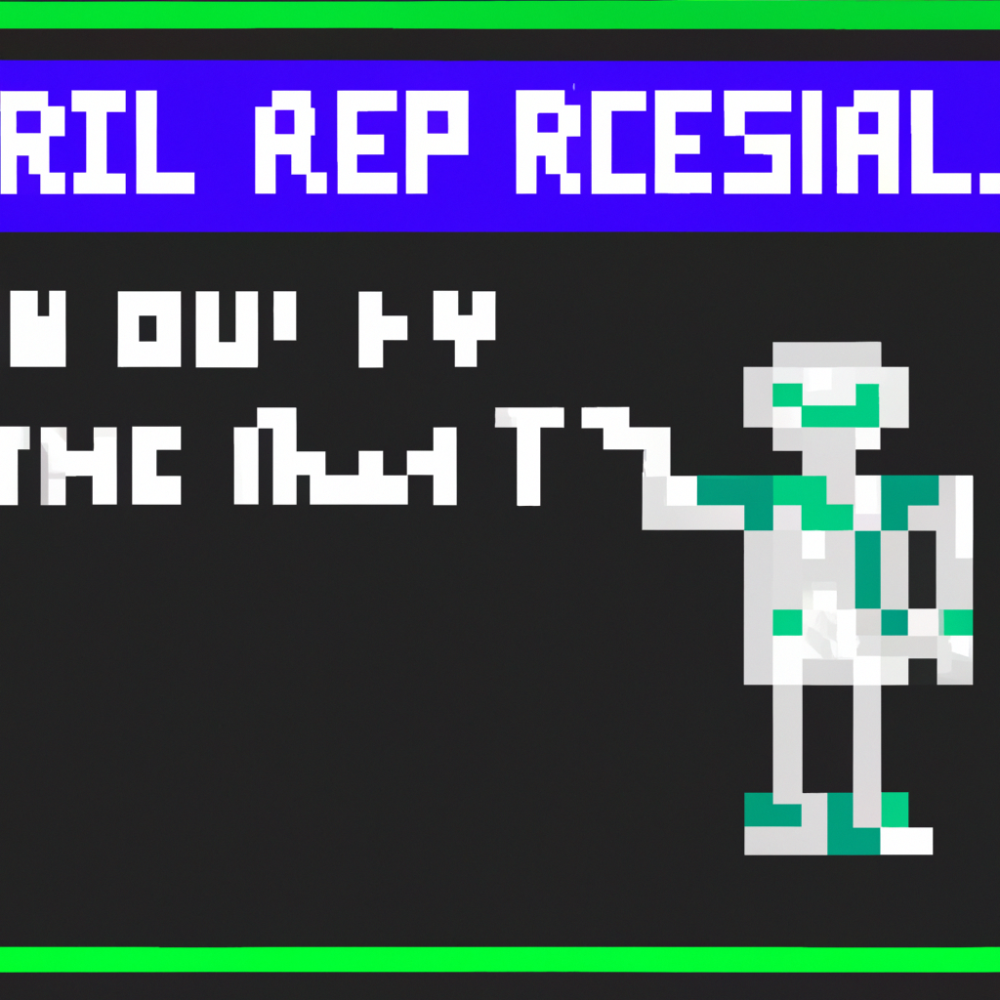

Why AI will never replace the radiologist
For years, AI and machine learning have been heralded as the solution to many of the world・s most pressing problems. From healthcare to education to finance, a wave of optimism has been generated about the potential of these technologies to revolutionize the way we do things. In the field of radiology, specifically, there has been a great deal of hype about the potential of AI and machine learning to revolutionize the field.
However, as with any new technology, there are some potential drawbacks to relying on AI and machine learning in radiology. Despite the promises of increased accuracy and efficiency, there are a few key points that suggest that AI will never truly be able to replace the radiologist.
First and foremost, AI algorithms are only as good as the data they are trained on. Unfortunately, the data used to train AI algorithms in the field of radiology is often incomplete, biased, and outdated. As a result, AI algorithms may overlook subtle symptoms or make false diagnoses. This could lead to missed or inaccurate diagnoses, which would put patients・ health and safety at risk.
Second, AI is not yet able to provide the same level of personalized care that a radiologist can. Radiologists are experts in their field, and they are able to draw on their clinical experience and intuition to make the best possible diagnosis for their patients. AI algorithms are not yet able to replicate this level of personalized care.
Finally, AI algorithms cannot replicate the human connection that radiologists provide. Radiologists are often the first line of communication for a patient・s health, and the radiologist・s ability to understand the patient・s medical history and concerns can be invaluable. AI algorithms cannot provide this same level of care and empathy.
In conclusion, while AI and machine learning have the potential to revolutionize the field of radiology, they are not yet advanced enough to truly replace the radiologist. AI algorithms are only as good as the data they are trained on, and they are not yet able to provide the same level of personalized care and human connection that a radiologist can. Therefore, AI will never truly be able to replace the radiologist.